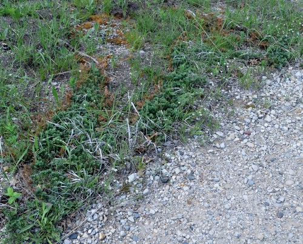

Central Bumble Bee
Bombus centralis native bee
A long-tongued social bumble bee. Forages on Allium, Cirsium, Monardella, Penstemon and others.
89 documented plant relationships.
sips nectar at
 Ascending MilkvetchAstragalus laxmannii
Ascending MilkvetchAstragalus laxmannii Leslie Seaton, some rights reserved (CC BY)") BalsamrootBalsamorhiza sagittata
BalsamrootBalsamorhiza sagittata Douglas Goldman, some rights reserved (CC BY-SA), uploaded by Douglas Goldman") BearberryArctostaphylos uva-ursi
BearberryArctostaphylos uva-ursi Eugene Popov, some rights reserved (CC BY), uploaded by Eugene Popov") Birch-leaved SpireaSpiraea betulifoliaBlanketflowerGaillardia aristataBlue ColumbineAquilegia brevistyla
Birch-leaved SpireaSpiraea betulifoliaBlanketflowerGaillardia aristataBlue ColumbineAquilegia brevistyla Boreal YarrowAchillea borealis
Boreal YarrowAchillea borealis Douglas Goldman, some rights reserved (CC BY-SA), uploaded by Douglas Goldman") Canada GoldenrodSolidago canadensis
Canada GoldenrodSolidago canadensis Jim Morefield, some rights reserved (CC BY), uploaded by Jim Morefield") Canada Milk VetchAstragalus canadensis
Canada Milk VetchAstragalus canadensis Douglas Goldman, some rights reserved (CC BY-SA), uploaded by Douglas Goldman") ChokecherryPrunus virginiana
ChokecherryPrunus virginiana J Brew, some rights reserved (CC BY-SA), uploaded by J Brew") Common PaintbrushCastilleja miniata
Common PaintbrushCastilleja miniata tomasz przechlewski, some rights reserved (CC BY)") Common SnowberrySymphoricarpos albus
Common SnowberrySymphoricarpos albus
Creeping JuniperJuniperus horizontalis Matt Lavin, some rights reserved (CC BY-SA)") Dotted BlazingstarLiatris punctata
Dotted BlazingstarLiatris punctata Matt Lavin, some rights reserved (CC BY-SA)") Drummond's MilkvetchAstragalus drummondii
Drummond's MilkvetchAstragalus drummondii Nick Block, some rights reserved (CC BY), uploaded by Nick Block") Eastern Red ColumbineAquilegia canadensis
Eastern Red ColumbineAquilegia canadensis Douglas Goldman, some rights reserved (CC BY-SA), uploaded by Douglas Goldman") FireweedChamaenerion angustifolium
FireweedChamaenerion angustifolium Alan Prather, some rights reserved (CC BY), uploaded by Alan Prather") Giant HyssopAgastache foeniculum
Giant HyssopAgastache foeniculum Matt Lavin, some rights reserved (CC BY-SA)") Golden BeanThermopsis rhombifolia
Golden BeanThermopsis rhombifolia peganum, some rights reserved (CC BY-SA)") Golden Currant (Buffalo Currant)Ribes aureumHeart-leaved ArnicaArnica cordifolia
Golden Currant (Buffalo Currant)Ribes aureumHeart-leaved ArnicaArnica cordifolia Steve Matson, some rights reserved (CC BY), uploaded by Steve Matson") Lance-leaved StonecropSedum lanceolatum
Lance-leaved StonecropSedum lanceolatum Andreas Stiller, some rights reserved (CC BY), uploaded by Andreas Stiller") Late GoldenrodSolidago gigantea
Late GoldenrodSolidago gigantea H. Zell, some rights reserved (CC BY-SA)") Leafy ArnicaArnica chamissonis
Leafy ArnicaArnica chamissonis Andrey Zharkikh, some rights reserved (CC BY)") Leafy AsterSymphyotrichum foliaceum
Leafy AsterSymphyotrichum foliaceum aarongunnar, some rights reserved (CC BY), uploaded by aarongunnar") Meadow BlazingstarLiatris ligulistylisMountain HollyhockIliamna rivularis
Meadow BlazingstarLiatris ligulistylisMountain HollyhockIliamna rivularis Jason Sturner, some rights reserved (CC BY)") Nodding OnionAllium cernuum
Nodding OnionAllium cernuum Ken-ichi Ueda, some rights reserved (CC BY), uploaded by Ken-ichi Ueda") Northern GentianGentianella amarella
Northern GentianGentianella amarella Carrie Seltzer, some rights reserved (CC BY), uploaded by Carrie Seltzer") Northern HedysarumHedysarum boreale
Northern HedysarumHedysarum boreale Caleb Catto, some rights reserved (CC BY), uploaded by Caleb Catto") Pale AgoserisAgoseris glauca
Pale AgoserisAgoseris glauca Syd Cannings, some rights reserved (CC BY), uploaded by Syd Cannings") Prairie CrocusPulsatilla nuttallianaPrairie GoldenrodSolidago missouriensis
Prairie CrocusPulsatilla nuttallianaPrairie GoldenrodSolidago missouriensis Joshua Mayer, some rights reserved (CC BY-SA)") Prairie RoseRosa arkansanaPrairie ThistleCirsium flodmanii
Prairie RoseRosa arkansanaPrairie ThistleCirsium flodmanii Tom Norton, some rights reserved (CC BY), uploaded by Tom Norton") Prickly Wild RoseRosa acicularisPurple Prairie CloverDalea purpurea
Prickly Wild RoseRosa acicularisPurple Prairie CloverDalea purpurea Matt Lavin, some rights reserved (CC BY-SA)") RabbitbrushEricameria nauseosa
RabbitbrushEricameria nauseosa Alan Rockefeller, some rights reserved (CC BY), uploaded by Alan Rockefeller") Red ColumbineAquilegia formosaRound-leaved AlumrootHeuchera cylindricaScorpion WeedPhacelia sericea
Red ColumbineAquilegia formosaRound-leaved AlumrootHeuchera cylindricaScorpion WeedPhacelia sericea Fluff Berger, some rights reserved (CC BY-SA), uploaded by Fluff Berger") Showy FleabaneErigeron speciosusShowy LocoweedOxytropis splendensShrubby CinquefoilDasiphora fruticosa
Showy FleabaneErigeron speciosusShowy LocoweedOxytropis splendensShrubby CinquefoilDasiphora fruticosa David Anderson, some rights reserved (CC BY), uploaded by David Anderson") Silky LupineLupinus sericeus
Silky LupineLupinus sericeus Tim Messick, some rights reserved (CC BY), uploaded by Tim Messick") Silvery LupineLupinus argenteus
Silvery LupineLupinus argenteus Jason Alexander, some rights reserved (CC BY), uploaded by Jason Alexander") Slender Blue BeardtonguePenstemon procerus
Slender Blue BeardtonguePenstemon procerus Slender Cinquefoil (Graceful Cinquefoil)Potentilla gracilis
Slender Cinquefoil (Graceful Cinquefoil)Potentilla gracilis aarongunnar, some rights reserved (CC BY), uploaded by aarongunnar") Smooth AsterSymphyotrichum laeve
Smooth AsterSymphyotrichum laeve Matt Lavin, some rights reserved (CC BY-SA)") Smooth Blue BeardtonguePenstemon nitidus
Smooth Blue BeardtonguePenstemon nitidus gwt2102, some rights reserved (CC BY)") Spreading DogbaneApocynum androsaemifolium
Spreading DogbaneApocynum androsaemifolium Sticky Purple GeraniumGeranium viscosissimum
Sticky Purple GeraniumGeranium viscosissimum Connie Taylor, some rights reserved (CC BY), uploaded by Connie Taylor") Tall Lungwort (Blue Bells)Mertensia paniculata
Tall Lungwort (Blue Bells)Mertensia paniculata Matt Lavin, some rights reserved (CC BY-SA)") Twin ArnicaArnica sororiaUmbrella BuckwheatEriogonum umbellatum
Twin ArnicaArnica sororiaUmbrella BuckwheatEriogonum umbellatum Nick Block, some rights reserved (CC BY), uploaded by Nick Block") Western Blue IrisIris missouriensis
Western Blue IrisIris missouriensis Mary Krieger, some rights reserved (CC BY), uploaded by Mary Krieger") Western SnowberrySymphoricarpos occidentalis
Western SnowberrySymphoricarpos occidentalis White GeraniumGeranium richardsonii
White GeraniumGeranium richardsonii tzeducation, some rights reserved (CC BY), uploaded by tzeducation") Wild BergamotMonarda fistulosa
Wild BergamotMonarda fistulosa Tom Hilton, some rights reserved (CC BY), uploaded by Tom Hilton") Wild Blue FlaxLinum lewisii
Wild Blue FlaxLinum lewisii Pohled 111, some rights reserved (CC BY-SA)") Wild ChivesAllium schoenoprasumWild GooseberryRibes oxyacanthoides
Wild ChivesAllium schoenoprasumWild GooseberryRibes oxyacanthoides Matt Lavin, some rights reserved (CC BY-SA)") Wild LicoriceGlycyrrhiza lepidota
Wild LicoriceGlycyrrhiza lepidota Ole Husby, some rights reserved (CC BY-SA)") Wild RaspberryRubus idaeus
Wild RaspberryRubus idaeus Don Loarie, some rights reserved (CC BY), uploaded by Don Loarie") Woods' RoseRosa woodsii
Woods' RoseRosa woodsii J Brew, some rights reserved (CC BY-SA), uploaded by J Brew") Yellow BeardtonguePenstemon confertus
Yellow BeardtonguePenstemon confertus Matt Berger, some rights reserved (CC BY), uploaded by Matt Berger") Yellow Monkey FlowerErythranthe guttata
Yellow Monkey FlowerErythranthe guttata Matt Lavin, some rights reserved (CC BY-SA)") Yellow PucoonLithospermum ruderale
Yellow PucoonLithospermum ruderale Matt Lavin, some rights reserved (CC BY-SA)") YellowbellsFritillaria pudica
YellowbellsFritillaria pudicagathers pollen at
BalsamrootBalsamorhiza sagittataBlanketflowerGaillardia aristataCommon SnowberrySymphoricarpos albusDrummond's MilkvetchAstragalus drummondii Tom Pollard, some rights reserved (CC BY), uploaded by Tom Pollard") Evening PrimroseOenothera biennisFireweedChamaenerion angustifolium
Evening PrimroseOenothera biennisFireweedChamaenerion angustifolium Matt Lavin, some rights reserved (CC BY-SA)") Hairy Golden AsterHeterotheca villosa
Hairy Golden AsterHeterotheca villosa Justin Meissen, some rights reserved (CC BY-SA)") Lilac PenstemonPenstemon gracilis
Lilac PenstemonPenstemon gracilis Joshua Mayer, some rights reserved (CC BY-SA)") Prairie Cinquefoil (Tall Cinquefoil)Drymocallis argutaPrickly Wild RoseRosa acicularisRound-leaved AlumrootHeuchera cylindrica
Prairie Cinquefoil (Tall Cinquefoil)Drymocallis argutaPrickly Wild RoseRosa acicularisRound-leaved AlumrootHeuchera cylindrica Sam Kieschnick, some rights reserved (CC BY), uploaded by Sam Kieschnick") Saskatoon BerryAmelanchier alnifoliaShooting StarDodecatheon pulchellumSilky LupineLupinus sericeusSlender Cinquefoil (Graceful Cinquefoil)Potentilla gracilis
Saskatoon BerryAmelanchier alnifoliaShooting StarDodecatheon pulchellumSilky LupineLupinus sericeusSlender Cinquefoil (Graceful Cinquefoil)Potentilla gracilis 2007 Dianne Fristrom, some rights reserved (CC BY-SA)") Tall LarkspurDelphinium glaucumUmbrella BuckwheatEriogonum umbellatumWild BergamotMonarda fistulosaWild RaspberryRubus idaeusYellow PucoonLithospermum ruderale
Tall LarkspurDelphinium glaucumUmbrella BuckwheatEriogonum umbellatumWild BergamotMonarda fistulosaWild RaspberryRubus idaeusYellow PucoonLithospermum ruderale